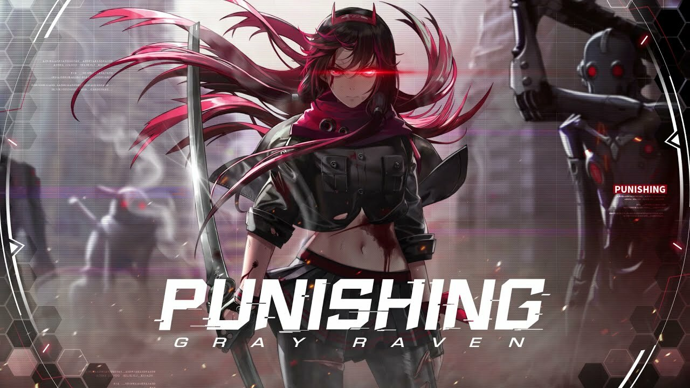
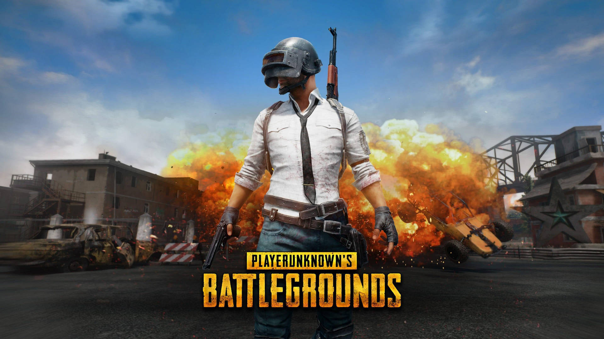

My Hobbies
"Hobbies are great distractions from the worries and troubles that plague daily living"
Our lives are greatly impacted by our hobbies. It provides us with entertainment and happiness when we have free time. Our hobbies allow us to forget about our problems and provide an escape from the real world. They also add interest and enjoyment to our lives. When we think about it, all of our interests are very beneficial to us. They impart a wealth of knowledge to us about various topics and expand our understanding.
I do enjoy various type of hobbies such as reading novel or comic, listening to the musics, watching movies or anime and more. But If I have to choose my favourite hobbies out of all that I have, I would choose playing video games. Playing video games is my favourite pastime. In reality, you may be asking yourself, "How does gaming lower your stress levels?". Well, you see in a world where competition is abundant, I've discovered my passion and considered it a hobby. I find that playing video games helps me unwind after a long and exhausting day in class. I prefered games that genuinely give me a deeper understanding of this challenging world such as having interesting storyline or interactive gameplay.
Here are some of the games that I enjoy playing:
Genshin Impact

Honkai Starrail
Reverse 1999
Punishing Gray Raven

Identity V
Player's Unknown Battleground (PUBG)
